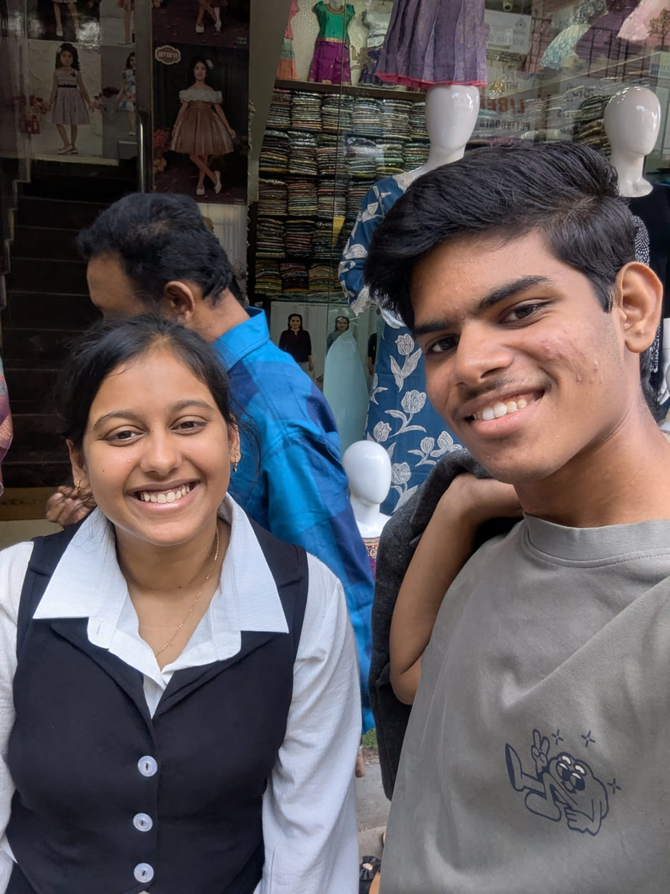
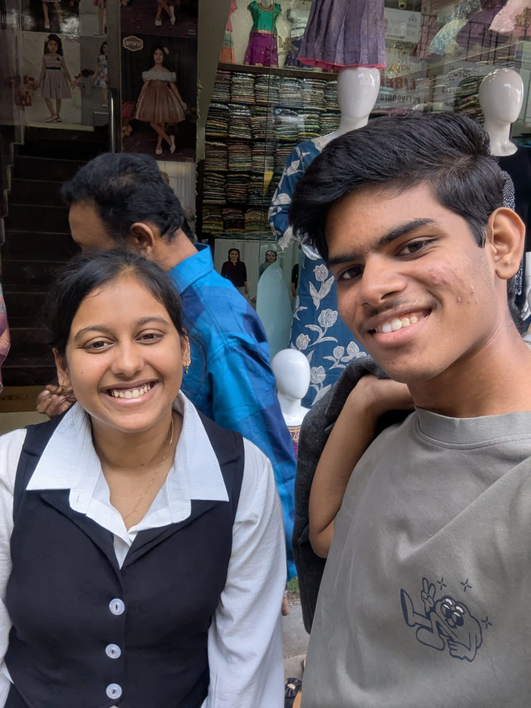

Turn the Page, My Love…
Every memory is a whisper of our bond. Let's relive them together.
She is the only one I look up to... I like her 'cause she's the brightest star in the sky, lighting up my world with endless sparkle.
Her smile is my favorite sunrise—soft, warm, and full of magic that makes every day feel like a dream come true.
She's the sweetest melody in my heart, turning ordinary moments into symphonies of joy and love that I cherish forever.
In her eyes, I see the universe—gentle, brave, and so full of wonder that she makes me believe in happily ever afters.
She's my cozy blanket on a rainy day, wrapping me in hugs and laughter that feel like home, no matter where we are.
Our bond is like a fairy tale—timeless, magical, and filled with adventures that make me grateful for her every single day.
Some Moments Never Fade…
 
